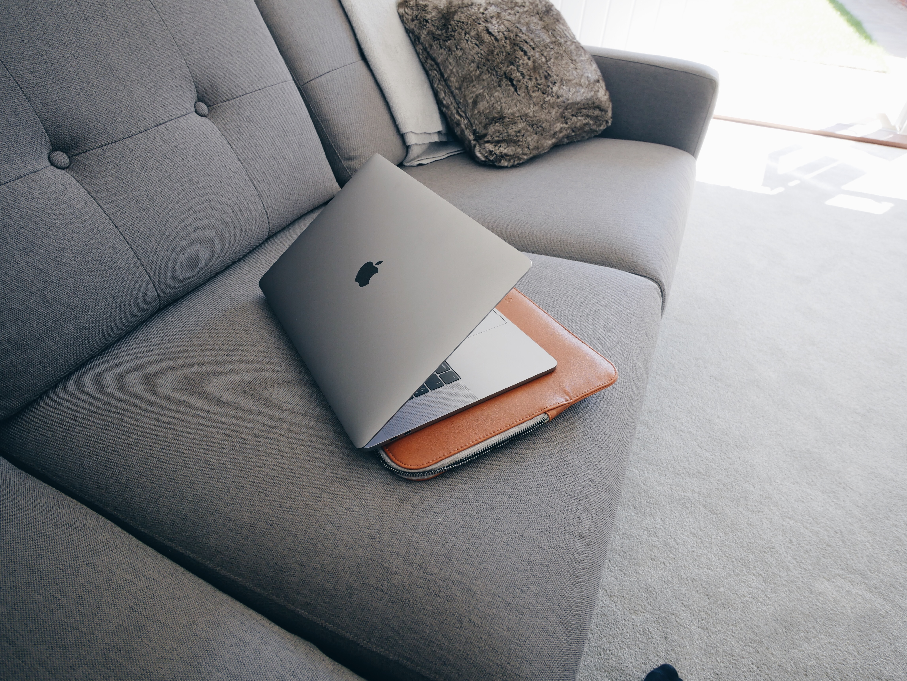

Ultra Violet isn’t a color I mix often. So, I viewed this project as both a formal challenge and an opportunity to broaden my color vocabulary. I decided to use Ultra Violet as a point of departure, featuring the color itself sparingly and focusing more on its parent primaries — red and blue. Today, the completed mural spans UICA’s entryway in Grand Rapids, Michigan. But my work started much earlier, a few thousand miles away at my studio in San Francisco. I began sketching ideas on paper and later bringing them to an iPad, drawing shapes and colors overtop the images UICA provided me. These ideas can be as simple as a set of compositional arrows or as defined as a colored gestural mark. I try to allow myself space to play by working on digital renderings where I can easily undo, save and iterate on ideas. Murals themselves don’t afford me the luxury of an “undo” button. Yet, regardless of the scale of a project, it feels restrictive to over plan for paintings. I keep play as an important part of my process. Thankfully, I had a enough time and mental space to let the direction of the mural gestate organically through play. In April, I arrived in Grand Rapids.I remember the first time I saw the site of the mural in person. A large, white, intimidating 95-foot wall. Through UICA’s full-wall windows, I could see every passerby walking down Fulton Street, a major road downtown. There, the reality of my timeline and the scale hit me hard. I had six days to complete the mural. I knew it was time to get to work. After taking down a few notes on the nuances of the wall and the sloping ground underneath it, I hailed a cab to take me to a nearby hardware store, and a few art supply stores to gather necessary supplies. My driver was a little suspicious as I loaded gallons upon gallons of paint and plastic sheeting into the back of his taxi. When I returned to UICA, my two assistants that the institute provided were waiting, ready to help.